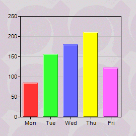
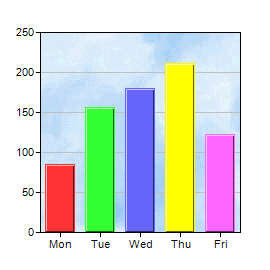
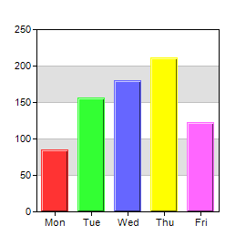
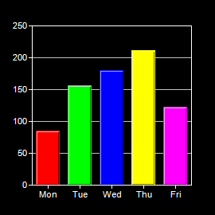

This example demonstrates some of the background effects supported by ChartDirector.
ChartDirector supports using an image file as the wallpaper of the chart image background with
BaseChart.setWallpaper, and as the plot area background with
PlotArea.setBackground2.
In addition to wallpapers, ChartDirector supports alternating plot area background colors using
PlotArea.setBackground and
PlotArea.setAltBgColor.
You can switch the default colors to using a dark background with white lines and text in one step by changing the color palette to a
whiteOnBlackPalette using
BaseChart.setColors.
The following is the command line version of the code in "cppdemo/background". The MFC version of the code is in "mfcdemo/mfcdemo". The Qt Widgets version of the code is in "qtdemo/qtdemo". The QML/Qt Quick version of the code is in "qmldemo/qmldemo".
#include "chartdir.h"
void createChart(int chartIndex, const char *filename)
{
// The data for the chart
double data[] = {85, 156, 179.5, 211, 123};
const int data_size = (int)(sizeof(data)/sizeof(*data));
const char* labels[] = {"Mon", "Tue", "Wed", "Thu", "Fri"};
const int labels_size = (int)(sizeof(labels)/sizeof(*labels));
// Create a XYChart object of size 270 x 270 pixels
XYChart* c = new XYChart(270, 270);
// Set the plot area at (40, 32) and of size 200 x 200 pixels
PlotArea* plotarea = c->setPlotArea(40, 32, 200, 200);
// Set the background style based on the input parameter
if (chartIndex == 0) {
// Has wallpaper image
c->setWallpaper("tile.png");
} else if (chartIndex == 1) {
// Use a background image as the plot area background
plotarea->setBackground("bg.png");
} else if (chartIndex == 2) {
// Use white (0xffffff) and grey (0xe0e0e0) as two alternate plotarea background colors
plotarea->setBackground(0xffffff, 0xe0e0e0);
} else {
// Use a dark background palette
c->setColors(Chart::whiteOnBlackPalette);
}
// Set the labels on the x axis
c->xAxis()->setLabels(StringArray(labels, labels_size));
// Add a color bar layer using the given data. Use a 1 pixel 3D border for the bars.
c->addBarLayer(DoubleArray(data, data_size), IntArray(0, 0))->setBorderColor(-1, 1);
// Output the chart
c->makeChart(filename);
//free up resources
delete c;
}
int main(int argc, char *argv[])
{
createChart(0, "background0.png");
createChart(1, "background1.png");
createChart(2, "background2.png");
createChart(3, "background3.png");
return 0;
}
© 2023 Advanced Software Engineering Limited. All rights reserved.